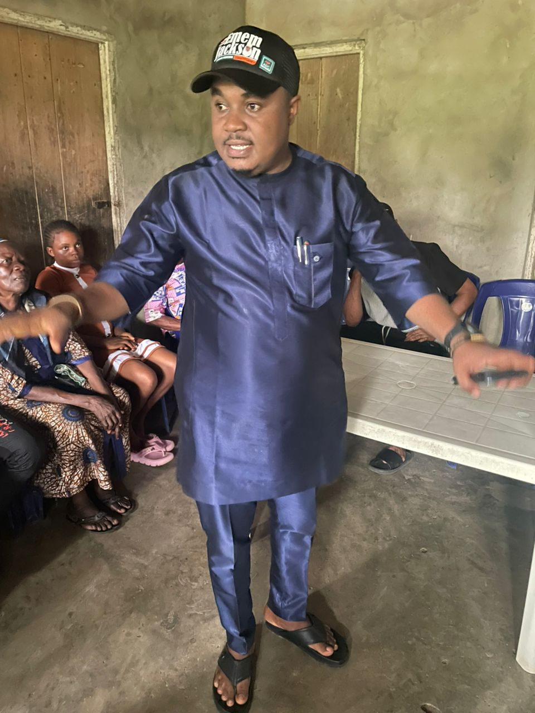
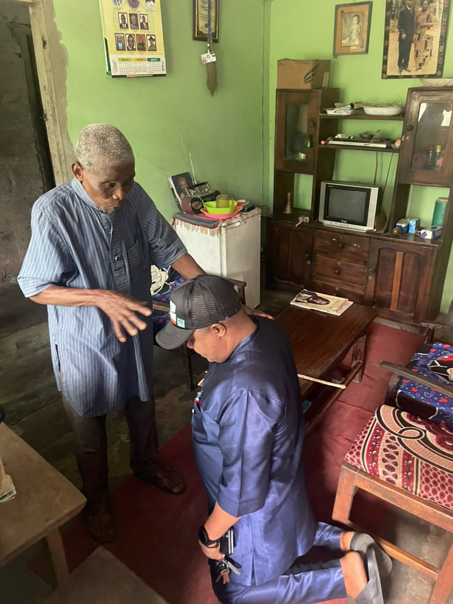
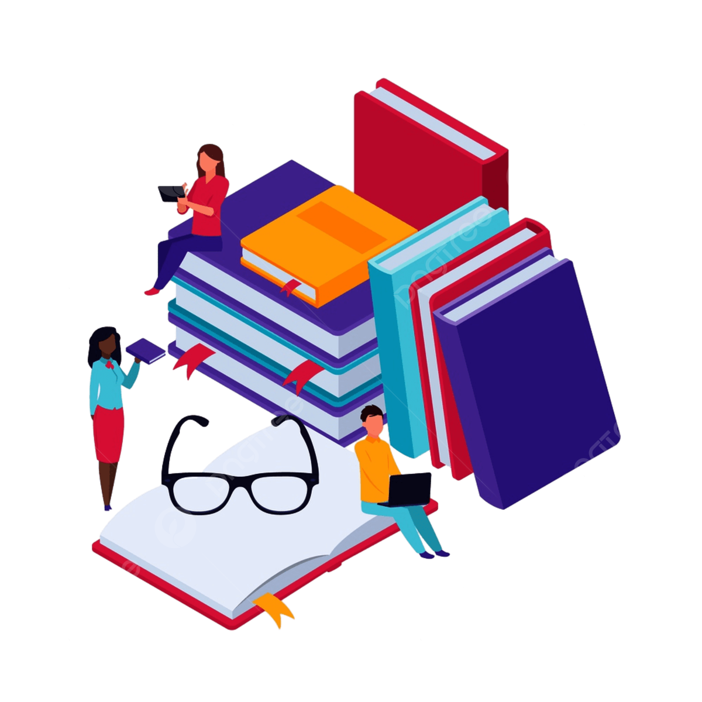

WHY UDUAK-ABASI 2027?
Uduak-Abasi 2027 was born out of a clear need for purposeful, people-centered representation in Etinan Federal Constituency. For too long, many communities have yearned for leadership that not only understands their challenges but is willing to take practical steps to address them.
Today, as the people of Etinan, Nsit Ibom, and Nsit Ubium seek meaningful progress, the call for a new direction has become stronger than ever. Uduak-Abasi 2027 represents that direction—a movement committed to restoring hope, driving development, and ensuring that the voices of the people are truly heard.
At the heart of this vision is the belief that leadership should be impactful, accessible, and accountable. The platform is focused on attracting government presence, improving infrastructure, empowering youths, supporting education, and creating opportunities that will uplift communities across the constituency.
Emem Jackson stands as the best foot forward—a tested and trusted leader with the vision, competence, and passion to deliver effective representation. His track record of service, commitment to humanity, and understanding of grassroots realities position him as the right choice to move the constituency forward.
With Uduak-Abasi 2027, the goal is clear: to build a stronger, more united constituency where development is visible, opportunities are accessible, and every citizen feels represented.
With Emem Jackson, the future of Etinan Federal Constituency is brighter, stronger, and full of possibilities.
A STRONG BEGGINNING
...Community Endorsement for the UduakAbasi 2027 Vision...
Since the declaration of his intention to represent the good people of Etinan Federal Constituency, Emem Jackson has received widespread acceptance and overwhelming support across communities. His vision, anchored on progress, inclusion, and people-centered leadership, has resonated deeply with the aspirations of the people. In a significant and symbolic step toward the realization of the UduakAbasi 2027 vision, Emem Jackson paid a consultative visit to his village head to seek traditional blessings and guidance. This visit reflects his deep respect for cultural values, grassroots leadership, and the importance of community alignment in leadership journeys. The village head warmly received him, offered heartfelt prayers, and bestowed his blessings upon the aspiration. In his response, he expressed confidence in Emem Jackson’s capacity to lead and assured him of his full support throughout the journey. This moment not only marks the beginning of a purposeful political movement but also underscores the importance of unity between emerging leadership and traditional institutions. With such foundational backing, the UduakAbasi 2027 vision continues to gain strength, momentum, and credibility among the people.

THE PLAN
1. Economic Empowerment
The Economic Empowerment plan of Uduak-Abasi 2027 is focused on creating sustainable opportunities that enable people to become financially independent and productive. The initiative aims to support small businesses, promote entrepreneurship, and equip youths and women with practical skills through training and capacity-building programs. By providing access to startup support, mentorship, and market opportunities, Uduak-Abasi 2027 seeks to reduce unemployment and stimulate local economic growth across Etinan, Nsit Ibom, and Nsit Ubium. The goal is to build a thriving economy where individuals are empowered to earn, grow, and contribute meaningfully to the development of their communities.
2. Educational Support
The Educational Support plan of Uduak-Abasi 2027 is designed to expand access to quality education and remove barriers that prevent young people from achieving their academic goals. The initiative focuses on providing scholarships, sponsoring examination forms such as JAMB, and offering mentorship and academic guidance to students. By supporting learning at all levels and encouraging excellence, Uduak-Abasi 2027 aims to empower youths with the knowledge and skills needed to succeed in life. The plan is committed to ensuring that no deserving student is left behind due to financial challenges, thereby building a stronger and more educated constituency.


3. Leadership development and inclusion
The Leadership Development and Inclusion plan of Uduak-Abasi 2027 is designed to raise a new generation of responsible, capable, and people-oriented leaders. The initiative focuses on equipping youths with leadership skills through mentorship, training, and active engagement in community and governance processes. It also promotes inclusion by creating platforms where young people, women, and underrepresented groups can participate in decision-making and contribute to policies that affect their lives. By fostering confidence, responsibility, and equal opportunity, Uduak-Abasi 2027 aims to build a leadership culture that is transparent, inclusive, and committed to the progress of the entire constituency.
4. Sports and Talent Development.
The Sports and Talent Development plan of Uduak-Abasi 2027 is focused on discovering, nurturing, and promoting the hidden talents within the constituency. Through organized sports competitions, talent hunts, and community events, the initiative aims to engage youths positively while promoting unity, discipline, and teamwork. The plan also seeks to provide platforms, training, and exposure for talented individuals to grow and reach professional levels. By investing in sports and creative talents, Uduak-Abasi 2027 will not only empower young people but also create opportunities for recognition, career development, and community pride.

5. Technological Empowerment Through ICT Trainings
The Technological Empowerment Through ICT Trainings plan of Uduak-Abasi 2027 is focused on preparing youths for the digital age by equipping them with relevant tech skills. The initiative will provide training in areas such as computer literacy, digital marketing, software basics, and online entrepreneurship, enabling participants to compete in today’s technology-driven world. By creating access to ICT knowledge and tools, Uduak-Abasi 2027 aims to reduce unemployment, promote innovation, and open doors to remote work and global opportunities. The goal is to build a digitally empowered generation capable of driving growth and development within the constituency and beyond.
6. Elderly Care and Support
The Elderly Care and Support plan of Uduak-Abasi 2027 is focused on ensuring that senior citizens are treated with dignity, respect, and compassion. The initiative recognizes the valuable contributions of the elderly and seeks to provide them with the care and support they deserve. Through community-based assistance, healthcare support, and welfare programs, the platform aims to improve the quality of life for older adults. It also encourages youths to play an active role in caring for the elderly, fostering a culture of responsibility and intergenerational support. The goal is to build a society where no elder is neglected, and every senior citizen feels valued and protected.